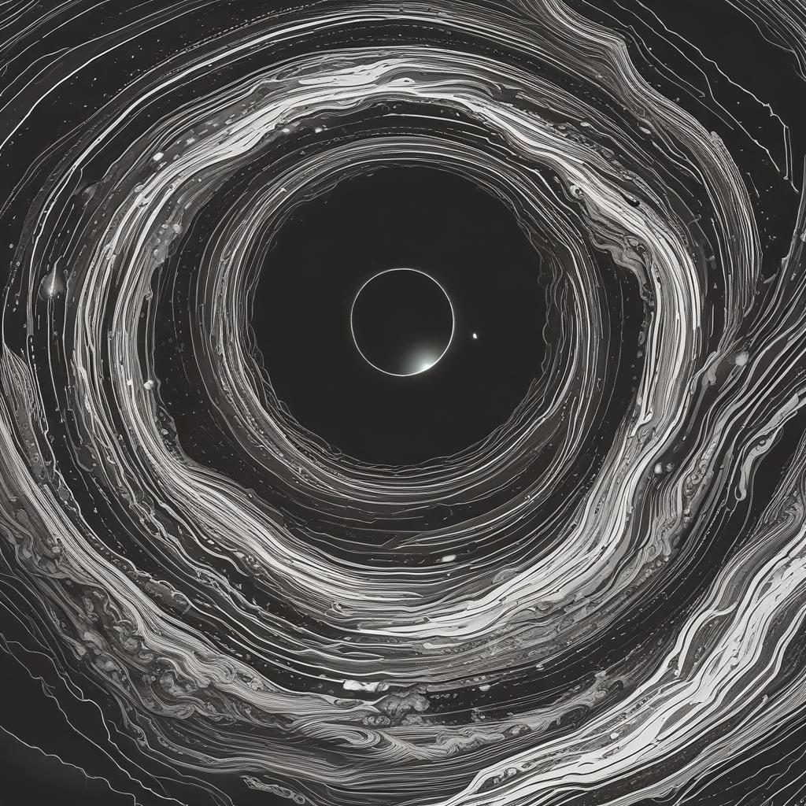

Второй пример
У Базарова всё становится не так гладко, когда он попадает под влияние Одинцовой. Его организм начинает войну с его принципами. "Кровь его загоралась, как только он вспоминал о ней; он легко сладил бы с своею кровью, но что-то другое в него вселилось, чего он никак не допускал, над чем всегда трунил, что возмущало всю его гордость." Здесь мы видим, как начинается жесточайшая ломка, которая говорит о противоестевстенности нигилизма, кажется, что он нечто сродне болезни. Казалось бы "благодаря" нигилизму Базаров так страдает, в отчаянной борьбе против самого себя, однако благодаря нигилизму, составляющему важную часть личности Базарова Одинцова сходится с ним характерами ("Базаров ей понравился — отсутствием кокетства и самою резкостью суждений. Она видела в нем что-то новое, с чем ей не случалось встретиться, а она была любопытна."). Кажется, что Базаров был интересен Одинцовой, до того момента, как он признался в любви, тогда он стал таким же, как и все до него. Также примечательно описание признания от лица Одинцовой (". Под влиянием различных смутных чувств, сознания уходящей жизни, желания новизны она заставила себя дойти до известной черты, заставила себя заглянуть за нее — и увидала за ней даже не бездну, а пустоту... или безобразие."). Получается некий оксюморон, чувства, тщательно скрываемые Базаровым, и резко выплеснутые со стороны Одинцовой это "пустота" или "безобразие". Т.е. даже чувства нигилиста, которые он отрицает похожи на пустоту... Нигилизм сжирает душу, скрывая тёплые чувства или завставляя их меняться до неузнаваемости, сеет высокомерие и самолюбие, которое образует бездну ("«Эге, ге!.. — подумал про себя Аркадий, и тут только открылась ему на миг вся бездонная пропасть базаровского самолюбия"), поглощающую человека...
